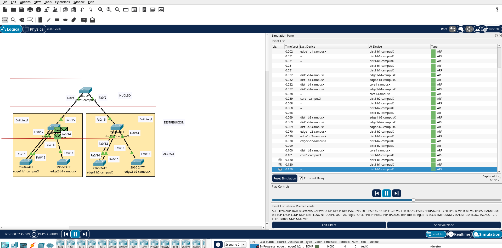
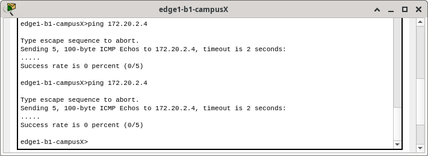
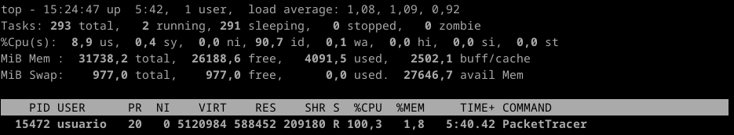

| Switch 2960-24TT | MAC Address | Ports | vlan1 MAC Address | IP/MS |
|---|---|---|---|---|
|
core1-campusX | 0002.4a19.ed01 0002.4a19.ed02 | Fa0/1 Fa0/2 | 00e0.b061.6333 | 172.20.0.1/16 |
dist1-b1-campusX | 0030.f294.3e0c 0030.f294.3e0d 0030.f294.3e0e 0030.f294.3e0f | Fa0/12 Fa0/13 Fa0/14 Fa0/15 | 0004.9a07.2be4 | 172.20.1.2/16 |
dist1-b2-campusX | 0010.1146.8b0c 0010.1146.8b0d 0010.1146.8b0e 0010.1146.8b0f | Fa0/12 Fa0/13 Fa0/14 Fa0/15 | 0002.1722.9dc3 | 172.20.2.2/16 |
edge1-b1-campusX | 0002.178c.b50e 0002.178c.b50f | Fa0/14 Fa0/15 | 000a.4181.09d5 | 172.20.1.3/16 |
edge2-b1-campusX | 0030.a393.710e 0030.a393.710f | Fa0/14 Fa0/15 | 000c.cf40.4cdb | 172.20.1.4/16 |
|
edge1-b2-campusX | 0010.1146.8b0e | Fa0/15 | 00d0.ff01.3b7b | 172.20.2.3/16 |
edge2-b2-campusX | 0001.9719.ad0f | Fa0/15 | 000d.bde6.e5c1 | 172.20.2.4/16 |
O propósito deste laboratorio e introducir o STP e cómo configurar as prioridades dos switches de núcleo, distribución e acceso apropiadamente.
Antes de continuar coa configuración do STP imos revisar a situación actual da rede. Para iso, primeiro espere a que todos os enlaces estén activos agas o porto Fa0/15 de edge1-b1-campusX e o porto Fa0/15 de edge1-b2-campusX
Execute os seguintes comandos na la CLI de todos os switchs e preste moita atención a saída:
> enable
# show spanning-tree
En todos é a mesma: 32769
Pois, como en todos a prioridade é a mesma debemos verificar que switch ten a dirección MAC Address máis pequena.
Execute os seguintes comandos na CLI de todos os switchs e verifique as MAC-Address das interfaces:
> show interfaces | include (is up|address)
> show interfaces vlan1 | include address
Así, na seguinte táboa refléxanse as MAC Address das interfaces e podemos determinar que switch é root switch
| Switch | MAC Address | Ports | vlan1 MAC Address | Root Switch |
|---|---|---|---|---|
| core1-campusX | 0002.4a19.ed01 0002.4a19.ed02 | Fa0/1 Fa0/2 | 00e0.b061.6333 | |
| dist1-b1-campusX | 0030.f294.3e0c 0030.f294.3e0d 0030.f294.3e0e 0030.f294.3e0f | Fa0/12 Fa0/13 Fa0/14 Fa0/15 | 0004.9a07.2be4 | |
| dist1-b2-campusX | 0010.1146.8b0c 0010.1146.8b0d 0010.1146.8b0e 0010.1146.8b0f | Fa0/12 Fa0/13 Fa0/14 Fa0/15 | 0002.1722.9dc3 | SI (Debido a que a MAC da vlan1 é a máis pequena) |
| edge1-b1-campusX | 0002.178c.b50e 0002.178c.b50f | Fa0/14 Fa0/15 | 000a.4181.09d5 | |
| edge2-b1-campusX | 0030.a393.710e 0030.a393.710f | Fa0/14 Fa0/15 | 000c.cf40.4cdb | |
| edge1-b2-campusX | 0010.1146.8b0e | Fa0/15 | 00d0.ff01.3b7b | |
| edge2-b2-campusX | 0001.9719.ad0f | Fa0/15 | 000d.bde6.e5c1 |
Verifica o root switch executando en todos os switchs os seguintes comandos na CLI:
> enable
# show spanning-treeNo switch dist1-b2-campusX a saída debería ser similar á seguinte:
VLAN0001
Spanning tree enabled protocol ieee
Root ID Priority 32769
Address 0002.1722.9DC3
This bridge is the root
...
> enable
# show spanning-treeAsí, na seguinte táboa refléxanse os "costos" dos portos das interfaces dos switchs
| Switch | MAC Address | Ports | Cost | vlan1 MAC Address | Cost vlan1 to root swtich |
|---|---|---|---|---|---|
core1-campusX | 0002.4a19.ed01 0002.4a19.ed02 | Fa0/1 Fa0/2 | 19 19 | 00e0.b061.6333 | 19 dende Fa0/2 |
dist1-b1-campusX | 0030.f294.3e0c 0030.f294.3e0d 0030.f294.3e0e 0030.f294.3e0f | Fa0/12 Fa0/13 Fa0/14 Fa0/15 | 19 19 19 19 | 0004.9a07.2be4 | 38 dende Fa0/15 |
dist1-b2-campusX | 0010.1146.8b0c 0010.1146.8b0d 0010.1146.8b0e 0010.1146.8b0f | Fa0/12 Fa0/13 Fa0/14 Fa0/15 | 19 19 19 19 | 0002.1722.9dc3 | 0 (Debido a que este e o root switch) |
edge1-b1-campusX | 0002.178c.b50e 0002.178c.b50f | Fa0/14 Fa0/15 | 19 19 | 000a.4181.09d5 | 57 dende Fa0/14 57 dende Fa0/15 Entón temos redundancia, co cal a MAC mais baixa e a do porto Fa014, co cal bloquease a Fa0/15 |
edge2-b1-campusX | 0030.a393.710e 0030.a393.710f | Fa0/14 Fa0/15 | 19 19 | 000c.cf40.4cdb | 57 dende Fa0/15 |
edge1-b2-campusX | 0010.1146.8b0e | Fa0/15 | 19 | 00d0.ff01.3b7b | 19 dende Fa0/14 19 dende Fa0/15 Entón temos redundancia, co cal a MAC mais baixa e a do porto Fa014, co cal bloquease a Fa0/15 |
edge2-b2-campusX | 0001.9719.ad0f | Fa0/15 | 19 | 000d.bde6.e5c1 | 19 dende Fa0/15 |
Que está sucedendo en edge1-bY-campusX?
edge1-b1-campusX#show spanning-tree
VLAN0001
Spanning tree enabled protocol ieee
Root ID Priority 32769
Address 0002.1722.9DC3
Cost 57
Port 14(FastEthernet0/14)
Hello Time 2 sec Max Age 20 sec Forward Delay 15 sec
Bridge ID Priority 32769 (priority 32768 sys-id-ext 1)
Address 000A.4181.09D5
Hello Time 2 sec Max Age 20 sec Forward Delay 15 sec
Aging Time 20
Interface Role Sts Cost Prio.Nbr Type
---------------- ---- --- --------- -------- --------------------------------
Fa0/14 Root FWD 19 128.14 P2p
Fa0/15 Altn BLK 19 128.15 P2pActualmente hai dous enlaces dende edge1 a dist1 en cada Edificio. Usaremos estos 2 enlaces logo neste exercicio de laboratorio.
Note como un enlace(Fa=/14)(Porto root) está en modo de reenvío(FWD=Forwarding), e o outro enlace(Fa0/15)(Porto alternativo) está en modo de bloqueo(BLK=Blocking). Desta forma non temos un bucle entre o edge1 e os switches dist1. Se o Spanning Tree está apagado entre estos dous switches, terminamos cun bucle, o tráfico non poderá ser reenviado, e a carga da CPU nos switches podería irse ao 100%.
Podemos desactivar STP para ver que efecto ten.
> enable
# show spanning-tree
# configure terminal
(config)# no spanning tree vlan 1
(config)# end
# show spanning-treeQue acontece?
Ao desactivar STP, eliminas a protección contra bucles na rede. Isto pode levar a bucles de retransmisión, o que é crítico en redes de gran escala.
É isto é o que está a acontecer: unha tormenta de broadcast. Agora as luces dos enlaces están activas(parpadeando) continuamente. Podes observar no modo simulación o que acontece se envías un único PDU de edge1-b1-campusX a edge2-b2-campusX (e que se reflexa na seguinte imaxe), nunca se acaba o envío de paquetes ARP.

Tamén podes observar o que acontece (e que se reflexa na seguinte imaxe) cando envías un ping entre eses 2 hosts: nunca responde, non chega, entón timeout.

A tormenta de paquetes está a provocar unha sobrecarga na CPU, polo que o packettracer ralentízase moito. Podes revisalo vendo como o packettracer na máquina anfitrión é un dos procesos que máis carga a CPU.

Configure as prioridades STP explicitamente para cada switch, de acordo co plan do Apéndice A.
Por exemplo, en dist1-b1-campusX:
dist1-b1-campusX(config)#spanning-tree vlan 1
dist1-b1-campusX(config)#spanning-tree vlan 1 priority 12288
Verifique:
# show spanning-tree vlan1Por que é tan importante configurar as prioridades explicitamente?
É importante establecer prioridades en STP de forma explícita para evitar bucles e garantir que a rede funciona correctamente. Se as prioridades non están configuradas, o protocolo STP pode escoller unha ruta subóptima, o que pode provocar un rendemento de rede deficiente.
Comprobe en todos os switchs a saída do comando:
# show spanning-tree
core1-campusX#show spanning-tree
VLAN0001
Spanning tree enabled protocol ieee
Root ID Priority 1
Address 00E0.B061.6333
This bridge is the root
Hello Time 2 sec Max Age 20 sec Forward Delay 15 sec
Bridge ID Priority 1 (priority 0 sys-id-ext 1)
Address 00E0.B061.6333
Hello Time 2 sec Max Age 20 sec Forward Delay 15 sec
Aging Time 20
Interface Role Sts Cost Prio.Nbr Type
---------------- ---- --- --------- -------- --------------------------------
Fa0/2 Desg FWD 19 128.2 P2p
Fa0/1 Desg FWD 19 128.1 P2p
| Switch | MAC Address | Ports | Cost | vlan1 MAC Address | Cost vlan1 to root swtich |
|---|---|---|---|---|---|
core1-campusX | 0002.4a19.ed01 0002.4a19.ed02 | Fa0/1 Fa0/2 | 19 19 | 00e0.b061.6333 | 0 (Debido a que este e o root switch) |
dist1-b1-campusX | 0030.f294.3e0c 0030.f294.3e0d 0030.f294.3e0e 0030.f294.3e0f | Fa0/12 Fa0/13 Fa0/14 Fa0/15 | 19 19 19 19 | 0004.9a07.2be4 | 19 dende Fa0/15 |
dist1-b2-campusX | 0010.1146.8b0c 0010.1146.8b0d 0010.1146.8b0e 0010.1146.8b0f | Fa0/12 Fa0/13 Fa0/14 Fa0/15 | 19 19 19 19 | 0002.1722.9dc3 | 19 dende Fa0/15 |
edge1-b1-campusX | 0002.178c.b50e 0002.178c.b50f | Fa0/14 Fa0/15 | 19 19 | 000a.4181.09d5 | 38 dende Fa0/14 38 dende Fa0/15 Entón temos redundancia, co cal a MAC mais baixa e a do porto Fa014, co cal bloquease a Fa0/15 |
edge2-b1-campusX | 0030.a393.710e 0030.a393.710f | Fa0/14 Fa0/15 | 19 19 | 000c.cf40.4cdb | 38 dende Fa0/15 |
edge1-b2-campusX | 0010.1146.8b0e | Fa0/15 | 19 | 00d0.ff01.3b7b | 38 dende Fa0/14 38 dende Fa0/15 Entón temos redundancia, co cal a MAC mais baixa e a do porto Fa014, co cal bloquease a Fa0/15 |
edge2-b2-campusX | 0001.9719.ad0f | Fa0/15 | 19 | 000d.bde6.e5c1 | 38 dende Fa0/15 |
Que está sucedendo en edge1-bY-campusX?
edge1-b1-campusX#show spanning-tree
VLAN0001
Spanning tree enabled protocol ieee
Root ID Priority 1
Address 00E0.B061.6333
Cost 38
Port 14(FastEthernet0/14)
Hello Time 2 sec Max Age 20 sec Forward Delay 15 sec
Bridge ID Priority 24577 (priority 24576 sys-id-ext 1)
Address 000A.4181.09D5
Hello Time 2 sec Max Age 20 sec Forward Delay 15 sec
Aging Time 20
Interface Role Sts Cost Prio.Nbr Type
---------------- ---- --- --------- -------- --------------------------------
Fa0/14 Root FWD 19 128.14 P2p
Fa0/15 Altn BLK 19 128.15 P2pPois segue acontecendo o mesmo de antes pero con outros "costos", seguen existindo dous enlaces dende edge1 a dist1 en cada Edificio.
Note como un enlace(Fa=/14)(Porto root) está en modo de reenvío(FWD=Forwarding), e o outro enlace(Fa0/15)(Porto alternativo) está en modo de bloqueo(BLK=Blocking). Desta forma non temos un bucle entre o edge1 e os switches dist1. Se o Spanning Tree está apagado entre estos dous switches, terminamos cun bucle, o tráfico non poderá ser reenviado, e a carga da CPU nos switches podería irse ao 100%.
Desconecte o core1-campusX dende o resto da rede:
> enable
# configure terminal
(config)# interface range fastethernet 0/1-2
(config-if)# shutdown
(config-if)# end
#
Reconecte o core1-campusX:
> enable
# configure terminal
(config)# interface range fastethernet 0/1-2
(config-if)# no shutdown
(config-if)# end
#
Que pasa no spanning tree cando o switch volve a estar en liña?
Pois voltamos á situación de partida antes de desconectar este switch.
Táboa de prioridade para cada switch
| Prioridade | Descrición | Notas |
|---|---|---|
| 0 | Switch de núcleo | Para o switch (core1-campusX) |
| 4096 | Switch de núcleo redundante | Para casos onde temos un 2do swtich de núcleo (redundancia) |
| 8192 | Reservado | |
| 12288 | Distribucion no edificio | (dist1-b1-campusX; dist1-b2-campusX) |
| 16384 | Distribucion redundante no edificio | Para casos onde temos un switch redundante para a distribución do edificio |
| 20480 | Backbone secundario | Este é un complexo de edificios, onde hai backbones de edificios separados (secundarios) que terminan no backbone do complexo. |
| 24576 | Switches de acceso | Esta é a prioridade normal acceso-dispositivo (edge1-b1-campusX; edge2-b1-campusX; edge1-b2-campusX; edge2-b2-campusX) |
| 28672 | Switches de acceso | Usado por switches de acceso que están en cadea dende outro switch de acceso. Usamos esta terminoloxía en vez de “switch de agregación” porque e difícil de definir cando un switch deixa de ser un switch de acceso para volverse un switch de agregación. |
| 32768 | Default | Dispositivos de rede non administrables deberán ter esa prioridade. |